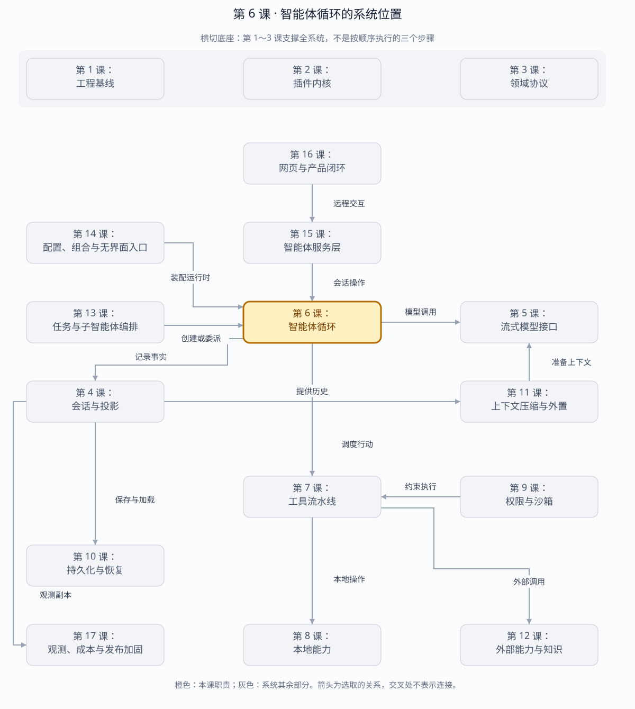

第 6 课：Inbox 驱动的 Agent Loop
扩展专题：DeepSeek Harness、OpenHands、Codex 的 Loop 跑在哪？本地与云端取舍、云端调用本地工具，以及对会话评估的影响 →
把用户输入、Session、LLM 串成一个不可重入的 turn/step 状态机，并让取消和错误也闭合日志。
章节概览（可选）：三框架职责摘要
本章对比：DeepSeek Harness / DeepAgents / OpenHands
口径：DeepSeek 依据本地原仓库（99f6f02fecdb），不是 harness-lab；deepagent 按 LangChain DeepAgents 理解；OpenHands 对比当前 Software Agent SDK，不混用旧 V0。在线资料核对于 2026-08-28，描述文档能力，不代表已在本实验室安装或测试。没有依据的同名能力不强行等同。
三者的关键区别：三者都完成“模型→行动→反馈”，差异在控制权放在专用驱动器、图运行时还是 Conversation 与 step 的协作中。（基于上述依据的归纳）
本章在全系统中的位置
系统的执行控制中心，连接状态、模型、工具和终止条件。
下面是本课程的概念地图，不是某框架的逐包调用图，也不表示实验室已默认装配全部能力。三套框架的实际对应关系见上方横向对比表。
全系统定位 · 橙色高亮第 6 课
打开大图 · Mermaid 图源
| 上游与输入 | 宿主提交的任务、已有会话、可用模型与工具。 |
|---|
| 下游与输出 | 连续步骤、工具结果、最终回答及运行状态。 |
|---|
| 不归本章负责 | 循环决定何时做，不应把文件系统、审批和压缩的所有实现都塞进来。 |
|---|
| 放进具体场景 | 用户要求查文件：循环问模型，收到读文件调用，执行并写回结果，再问模型直到结束。 |
|---|
接着看下方「可视化图解」：局部模块图解释职责，时序图解释一次调用，分支图解释异常与边界。
本课导览
| 包含内容 | 收件箱、轮次、步骤、模型调用、停止原因、并发保护和取消。 |
|---|
| 涉及模块 | HarnessAgent、Inbox、Turn、Step、LlmRuntime、Session。 |
|---|
| 白话解释 | 智能体像一次只处理一张工单的工作人员：领取消息、调用模型、记录结果，然后完整收尾。 |
|---|
| 解决的问题 | 防止同一智能体重复运行和事件交叉，并保证成功、错误、取消都留下可恢复的闭合日志。 |
|---|
点击下面的概念名称，可直达该概念的三框架实现、区别与依据。原有能力清单、示例和验收描述面向 harness-lab 教学实现；不要将其直接当作上游框架能力声明。
完整能力清单
| 能力 | 行为 | 不变量 |
|---|
| 消息入箱 | 接收用户消息并写入会话，等待下一轮原子认领。 | 运行中到达的新消息留给下一轮。 |
| 单轮运行 | 从空闲进入运行，生成轮次与步骤标识，调用模型并闭合事件。 | 同一智能体不可重入。 |
| 步骤推进 | 一个轮次内可按模型结果推进多个步骤。 | 步骤编号连续且属于当前轮次。 |
| 停止原因 | 区分完成、工具阻塞、最大步骤、取消和错误。 | 所有出口都写入轮次结束事件。 |
| 取消传播 | 中止当前模型或工具工作并等待协作式收尾。 | 生命周期投影仍然闭合。 |
| 空运行 | 没有待处理输入时直接返回。 | 不产生任何副作用或伪事件。 |
主概念深挖：Agent Loop 状态机
Agent Loop 位于用户/服务端命令的下游，模型与工具运行时的上游，并用 Session 事件把每次决策变成可恢复事实。
User / Server ── send(Message) ─► Inbox
│ run 原子认领
▼
Turn ─► Step ─► LLM
▲ │
│ Tool calls
└── Tool results
│
Session events + TurnResult（输出）
| 背景与目的 | “调用一次模型”不等于智能体；智能体还要管理输入归属、多步骤推进、并发、取消和所有终止出口。 |
|---|
| 输入与输出 | 输入是收件箱消息、Agent 配置和取消信号；输出是轮次结果，以及完整的轮次、步骤、消息、工具和错误事件。 |
|---|
| 适用场景 | 单会话问答、连续工具调用、远程取消、并发请求保护和崩溃后继续编号。 |
|---|
| 底层组件 | 空闲/运行状态、收件箱队列、轮次与步骤计数器、模型步骤、工具执行器和 AbortController。 |
|---|
| 核心逻辑 | run 先原子切换状态并认领当前输入，随后循环执行模型步骤；有工具则执行并继续，无工具或达到边界则按明确原因闭合。 |
|---|
| 权衡 | 每个 Agent 串行运行限制单会话吞吐，却避免事件交错和上下文竞态；跨任务并行交给后续子智能体层。 |
|---|
| 方案对比 | 递归函数写法简短但难统一取消和步数限制；显式状态机代码稍多，却能穷尽正常、错误、阻塞和取消路径。 |
|---|
场景穷举
run()
├─ Inbox 为空 → 无副作用返回
├─ 模型直接回答 → finish → turn/end completed
├─ 模型请求工具 → 执行 → 下一 step
├─ 工具仍未接入 → turn/end blocked
├─ 达到 maxSteps → turn/end max-steps
├─ 模型/工具异常 → turn/end error
└─ cancel → 协作收尾 → turn/end cancelled
| 场景 | 状态变化 | 日志要求 |
|---|
| 正常回答 | idle→running→idle。 | 轮次和步骤成对闭合，助手消息已提交。 |
| 新消息竞态 | 运行中消息只入箱，不并入当前轮次。 | 下一次 run 再认领，避免上下文漂移。 |
| 并发 run | 第二个调用立即被拒绝。 | 不产生第二组轮次事件。 |
| 取消 | 信号传给当前子操作，最终回到 idle。 | 错误或工具取消先落账，再闭合步骤和轮次。 |
| 进程恢复 | 从最大历史轮次编号加一。 | 不依赖内存计数器连续性。 |
多方案对比
| 方案 | 控制流 | 竞态可见性 | 适合 |
|---|
| 递归调用模型 | 代码短，工具后递归。 | 取消、步数和错误出口分散。 | 简单原型。 |
| 显式 while 状态机 | 出口集中、步骤清晰。 | 高，断点可观察每次转换。 | 需要恢复和审计的 Harness。 |
| Actor 邮箱 | 消息驱动、天然串行。 | 高，扩展并发模型强。 | 大规模多 Agent 系统，但实现更重。 |
关键设计反问
- 为什么运行中消息不能立刻加入当前轮次？
- 模型请求可能已基于旧上下文发出；中途改变输入会使“请求看到了什么”和日志记录不一致。
- 取消为什么不能直接把状态改回 idle？
- 底层模型或工具可能仍在写事件或产生副作用；必须传播信号并等待收尾后才能释放运行权。
- 为什么 maxSteps 是正确性边界而非性能配置？
- 模型可能无限重复工具调用；没有硬上限，单轮永远不闭合，资源和费用也无上界。
状态与事件顺序
send() ──> Inbox
│ run() 原子认领
▼
idle ──> running
turn/start
user/message × N
step/start
request/header
assistant/chunk × N
assistant/message（仅成功）
step/end
turn/end
│
▼
idle
| Finish | TurnEndReason | 本阶段含义 |
|---|
| stop | completed | 正常完成 |
| max-tokens | max-tokens | 输出达到上限 |
| error | error | 保留结构化 failure |
| aborted | aborted/user | 取消仍闭合 step/turn |
| tool-calls | blocked | 等待下一课接入工具执行 |
消息入箱：三框架分别怎么做？
同一个问题：运行中来的消息是下一轮输入，还是下一步引导？
这个概念的区别：同样能中途发消息，但何时领取、是否唤醒、是否开启新轮次要分别比较。
单轮运行：三框架分别怎么做？
同一个问题：谁拥有 run 的控制权？
这个概念的区别：本课一轮的边界不一定等同图 run 或 Conversation.run，测试时先定义比较单位。
步骤推进：三框架分别怎么做？
同一个问题：一次模型回复后如何进入下一步？
这个概念的区别：“一步”可能只是压缩或等待处理，不保证每一步都发生一次模型调用。
停止原因：三框架分别怎么做？
同一个问题：等待、失败、取消与正常完成如何区分？
这个概念的区别：状态展示必须保留停止原因，否则暂停可能被误报完成，失败可能被误报空回答。
取消传播：三框架分别怎么做？
同一个问题：取消返回是否已经没有后台工作？
这个概念的区别：取消信号、运行停止和资源回收是三个时刻；不能用按钮回执替代停稳证据。
空运行：三框架分别怎么做？
同一个问题：没有待处理内容时会不会额外调用模型？
这个概念的区别：验证空运行应观察模型调用次数和状态边界，不能只看返回文本是否为空。
运行与调试
cd harness-lab
bun run demo:agent
VS Code F5 → 05 · 智能体循环
# 推荐断点
# HarnessAgent.run() 的 Inbox splice
# runModelStep() 的 for-await
# turn/end reason 映射
必须验证的竞态
- 同一 Agent 并发
run() 必须拒绝，不能产生交错 seq。
- 运行期间新到的输入不能混进已认领 turn，必须留给下一 turn。
- 取消慢流后仍产生
step/end 与 turn/end。
- 恢复已有 Session 后，下一个 turn 编号不能从 1 重来。
本阶段验收
TypeScript strict check: passed
tests: 31
pass: 31
fail: 0
源码
下一课实现工具注册、JSON 参数校验、并发执行、结果落账，并把 tool-calls 从 blocked 变成下一 step。
返回完整路线 →